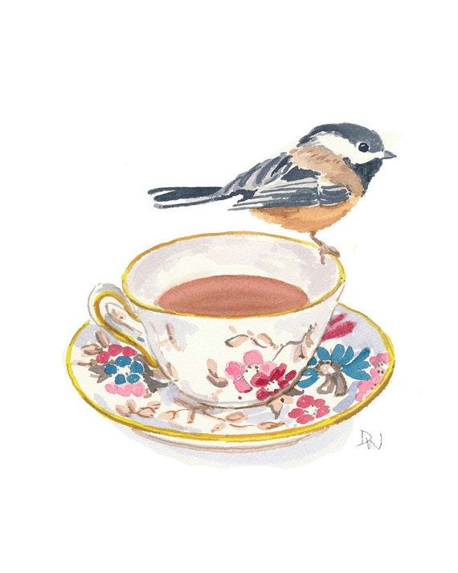
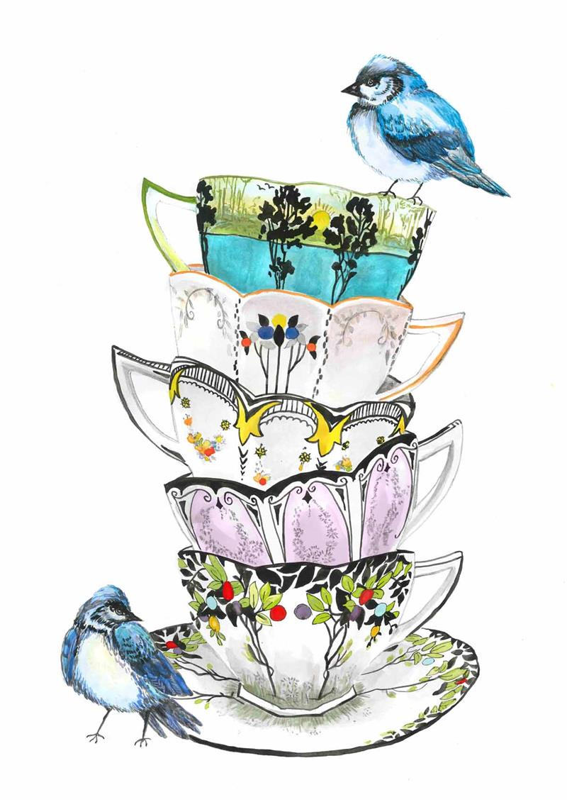

Sri Lanka's tea production for the month of October 2020 amounted to 23,4 million kgs, compared to 2,1 million kgs for October 2019. However, between January and October 2020, the combined production amounted to 224.7 million kgs and a deficit of 29.4 million kgs, compared with 254.2 million kg between January and October 2019. The lowest deficit is reported to decrease, all of them cumulatively.
Production
Results
October 2020 CTC production was 1.79 million kg and 0.24 million kgs declined in October 2019 compared with 2.03 million kgs. However, total production in January-October 2020 amounted to 19.11 million kilograms with a 0.22-million-kilogram deficit compared to 19.33 million kilos in January-October 2019. High-growing individuals have registered a large YOY gain while mediums have a modest decline. Low Grown, however, have seen a very significant decline, as stated in the TEA EXPORTERS ASSOCIATION SRI LANKA.

Overall
It is vital to pay special attention to many forecast variables in tea prices, which include environmental issues and its negative effects, while monitoring the supply and demand equation, current international economic conditions, uncertainty in major Ceylon Tea countries, also equally significant.
Tea is the best-consuming drink in the world, except for water and tea consumption analysts expect that China is a major part of its rising growth and that it is closely watched by India. China has gradually influenced global demand for black tea and is also expected to increase in the coming year. From Sri Lanka's viewpoint, exports to China saw substantial gains.
Tea market demand will certainly depend on how the global tea industry performs over the first half for the second half of the year. Sri Lanka sells one kilo of tea at some of the best prices in the country. Higher output costs, lower yield and an adverse tea brewing age profile have contributed to reduced income.
A higher production and cost reduction may be necessary to improve competition in the world market of 'Ceylon Teas' in the medium to long term. Consequently, 'Ceylon Teas’ global competitiveness will depend heavily on industry's rapid response to these important issues.
